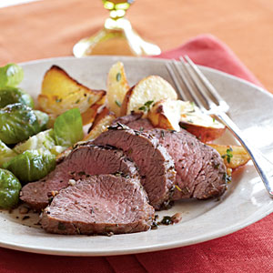

| Herb-Roasted Beef and Potatoes | |
|---|---|
|  |
1. Preheat broiler.
2. Combine 1 tablespoon thyme, rosemary, parsley, 1 tablespoon oil, 3/4 teaspoon salt, 1/2 teaspoon pepper, and garlic; rub evenly over both sides of beef. Place beef on the rack of a broiler pan coated with cooking spray; place rack in pan. 3. Combine the potatoes, remaining 1 1/2 tablespoons oil, remaining 1/2 teaspoon salt, and remaining 1/4 teaspoon pepper; toss. Arrange potato mixture onto rack around beef. Broil 7 minutes. Turn beef over. Broil 7 minutes or until beef is desired degree of doneness. Remove from oven. Place beef on a cutting board; let stand 5 minutes. Stir potatoes; sprinkle with remaining 1 tablespoon thyme. Cut beef across grain into thin slices; serve with potatoes. |